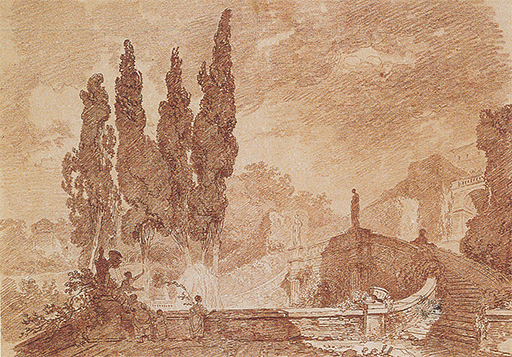

23
LA EDAD DE LA RAZÓN
Inglaterra y Francia, siglo XVIII
La época en torno a 1700 vio la culminación del movimiento barroco en la Europa católica. Los países protestantes no pudieron evitar el influjo de esta tendencia avasalladora; pero, sin embargo, no llegaron realmente a adoptarla. Esto puede aplicarse también a Inglaterra en el período de la restauración, cuando la corte de los Estuardo tenía las miradas puestas en Francia y aborrecía los gustos y puntos de vista de los puritanos. Fue en esa época cuando Inglaterra produjo a su máximo arquitecto, sir Christopher Wren (1632-1723), al que se confirió la tarea de reconstruir las iglesias de Londres tras el incendio de 1666. Resulta interesante comparar su catedral de San Pablo (ilustración 299) con una iglesia barroca romana construida tan sólo veinte años antes (ilustración 282). Observamos que Wren fue influido claramente por los efectos y combinaciones del arquitecto barroco, aun cuando nunca hubiera estado en Roma. Al igual que la iglesia de Borromini, la catedral de Wren, cuya escala es mucho mayor, tiene una cúpula central, dos torres a los lados y la evocación de la fachada de un templo antiguo enmarcando la puerta principal. Incluso existe una evidente similitud entre las torres barrocas de Borromini y las de Wren, especialmente en el cuerpo central de unas y otras. No obstante, la impresión de conjunto de ambas fachadas es muy diferente. La de Wren carece de ondulación, no sugiere la idea de movimiento, sino más bien la de firmeza y estabilidad. El modo de emplearse en ellas pares de columnas para que le confieran nobleza y solidez recuerda la fachada de Versalles (ilustración 291) más que las del barroco romano. Observando los pormenores, incluso podemos titubear en darle el nombre de barroco al estilo de Wren, pues no existe nada fantástico o caprichoso en su ornamentación; todas sus formas se atienen estrictamente a los mejores modelos del Renacimiento italiano. Cada forma y cada fragmento del edificio pueden ser considerados en sí mismos sin que pierdan nada de su intrínseco sentido. Comparado con la exuberancia de Borromini, o del arquitecto de Melk, Wren produce la impresión de contención y sobriedad.
299 Sir Christopher Wren. Catedral de San Pablo, Londres, 1675-1710.
El contraste entre la arquitectura protestante y la católica se nota más aún al considerar los interiores de las iglesias de Wren, por ejemplo la de San Esteban Walbrook, en Londres (ilustración 300). Una iglesia anglicana es, ante todo y principalmente, una sala en la cual la fe se manifiesta por la reunión de la comunidad. Su finalidad no es evocar una visión de otro mundo, sino permitirnos recogernos en nuestros pensamientos. En las muchas iglesias que trazó, Wren procuró ofrecer variantes siempre nuevas del tema de una sala semejante que fuera, a la par, grave y sencilla.
300 Sir Christopher Wren. Interior de la iglesia de San Esteban Walbrook, Londres, 1672.
Y lo mismo que de las iglesias ha de decirse de los castillos. Ningún rey de Inglaterra podía haber reunido las sumas ingentes que se necesitaban para construir un Versalles, ni ningún par inglés hubiera querido competir en lujo y extravagancia con los pequeños príncipes alemanes. Es cierto que la manía de construir también alcanzó a Inglaterra, y que el palacio Blenheim, del duque de Marlborough, posee mayores proporciones aún que el Belvedere del príncipe Eugenio; pero se trata de excepciones, ya que el ideal del siglo XVIII inglés no fueron los castillos, sino las residencias campestres.
Los arquitectos constructores de estas últimas, por lo general, rechazaron las extravagancias del estilo barroco. Su ambición consistió en no infringir ninguna regla de lo que consideraron buen gusto, y por ello ansiaban respetar tan fielmente como pudieran las verdaderas o pretendidas leyes de la arquitectura clásica. Los arquitectos del Renacimiento italiano, que estudiaron y calcularon las ruinas de las construcciones antiguas con científica minuciosidad, habían publicado sus hallazgos en libros de consulta que proporcionaron esquemas y modelos a los arquitectos y a los artistas. El más famoso de estos libros fue escrito por Andrea Palladio. Esta obra de Palladio llegó a ser considerada como la primera autoridad acerca de todas las reglas pertinentes al gusto en arquitectura durante el siglo XVIII en Inglaterra. Construir la propia residencia campestre «a la manera de Palladio» fue entendido como el último grito de la moda. La ilustración 301 muestra una de esas villas, Chiswick House, cerca de Londres. La habitación principal, diseñada para su propio uso por lord Burlington (1695-1753), árbitro entonces del gusto y de la moda, y decorada por su amigo William Kent (1685-1748), es en realidad una imitación de la villa Rotonda (ilustración 232) de Palladio. Al contrario que Hildebrandt y otros arquitectos de la católica Europa, los diseñadores de la Villa inglesa no contravinieron en ningún detalle las rígidas reglas del estilo clásico. El majestuoso pórtico posee la correcta forma del frontis de un templo antiguo construido dentro del orden corintio. El muro del edificio es liso y sencillo, sin curvas ni volutas, sin estatuas que coronen el tejado y sin adornos grotescos.
301 Lord Burlington y William Kent, Chiswick House, Londres, h. 1725.
La norma del buen gusto en la Inglaterra de lord Burlington y de Alexander Pope fue también la norma de la razón. Todo el carácter del país se oponía a los vuelos de la fantasía de los diseños barrocos y a un arte cuya finalidad era producir una impresión abrumadora. Los parques más formales, al estilo de Versalles, cuyas avenidas e interminables setos recortados prolongaban la concepción del arquitecto más allá del edificio en sí, hacia el paisaje en torno, eran condenados por absurdos y artificiosos. Un jardín o un parque debía reflejar las bellezas naturales, debía ser un conjunto de hermosas perspectivas que deleitaran los ojos de un pintor. Artistas como Kent fueron los que crearon el jardín-paisaje inglés, como acompañamiento ideal de las villas a la manera de Palladio. Y del mismo modo que apelaban a la autoridad de un arquitecto italiano respecto a las normas de razón y de buen gusto en arquitectura, se dirigieron a los pintores meridionales en busca de un criterio de belleza para las perspectivas naturales. Su idea de cuál debía ser el aspecto de la naturaleza derivó en gran medida de los cuadros de Claude Lorrain. Resulta interesante comparar el hermoso parque de Stourhead, en Wiltshire (ilustración 302), realizado en la primera mitad del siglo XVIII, con obras de estos dos maestros. El «templo» del fondo recuerda de nuevo la Villa Rotonda de Palladio (la cual, a su vez, había tomado como modelo el Panteón romano), mientras el conjunto de la vista con el lago, el puente y la evocación de los edificios romanos confirma mis observaciones acerca de la influencia que iban a tener los cuadros de Claude Lorrain (ilustración 255) sobre la belleza del paisaje inglés.
302 El parque de Stourhead, Wiltshire, trazado a partir de 1741.
La posición de pintores y escultores ingleses bajo la norma del buen gusto y de la razón no fue muy envidiable, ciertamente. Hemos visto que el triunfo del protestantismo en Inglaterra y la hostilidad puritana hacia el lujo y las imágenes comunicó a la tradición artística inglesa una gran severidad. Casi para lo único que todavía se solicitó el concurso de la pintura fue para los retratos, e incluso esta función fue desempeñada en su mayor parte por artistas extranjeros como Holbein y Van Dyck, a los que se hizo ir a Inglaterra cuando ya habían afianzado su reputación en otros países.
Los caballeros elegantes de la época de lord Burlington no ponían ninguna objeción, de acuerdo con los principios puritanos, a los cuadros o las esculturas, pero no les interesaba hacer encargos a los artistas nativos que aún no hubieran conquistado fama en el extranjero. Si deseaban un cuadro para sus villas, preferían adquirir alguno que ostentara la firma de algún famoso maestro italiano. Se enorgullecían de ser coleccionistas, y algunos de ellos formaron las colecciones más admirables de maestros del pasado, sin que, no obstante, encomendaran muchas tareas a los pintores de su tiempo.
Este estado de cosas irritó grandemente a un joven grabador inglés que tuvo que vivir ilustrando libros. Su nombre fue William Hogarth (1697-1764), quien sintió que llevaba dentro un pintor tan bueno como aquellos cuyas obras se hacían venir de fuera por centenares de libras; aunque advirtió que no existía público en Inglaterra para el arte contemporáneo. Como consecuencia de ello, se puso deliberadamente a crear un nuevo tipo de cuadros que atrajeran a las gentes de su país. Se dio cuenta de que se manifestaba allí la tendencia a preguntar «¿Para qué sirve un cuadro?», y decidió que, para atraer a las personas formadas en la tradición puritana, el arte debía poseer una utilidad evidente. De acuerdo con ello, concibió una serie de cuadros que enseñaran las recompensas de la virtud y las consecuencias del pecado. Mostraría La carrera del libertino, desde la depravación y el ocio hasta el crimen y la muerte, o Los cuatro grados de la crueldad, desde un niño maltratando a un gato hasta el adulto convertido en asesino brutal. Pintaría esos temas edificantes y esos ejemplos aleccionadores de tal modo que cualquiera que viese las series de sus cuadros comprendería todos los lances y todas las lecciones que enseñaban. Sus cuadros, en efecto, parecerían una especie de representación muda en la que todos los personajes tuvieran señalado su papel, manifestando claramente su sentido por medio de los ademanes y el empleo adecuado de la escenografía. El propio Hogarth comparó este nuevo tipo de cuadro con el arte del dramaturgo y del director de escena. Hizo todo lo posible para destacar lo que llamaba el carácter de cada personaje, no sólo por su rostro sino también por sus vestidos y conducta. Cada una de sus secuencias gráficas puede ser leída como una narración o, mejor aún, como un sermón. En este aspecto, esta modalidad de su arte tal vez no fue tan enteramente nueva como él creyó, pues, como ya sabemos, todo el arte del medievo utilizó las imágenes como enseñanza, y esta tradición del sermón gráfico habría de sobrevivir en el arte popular hasta la época de Hogarth. Toscos grabados en madera se vendían en las ferias mostrando el destino del bebedor o los riesgos del juego, y los copleros vendían pliegos de cordel con relatos de la misma índole. Hogarth no fue, sin embargo, un artista popular en este sentido; estudió atentamente a los maestros del pasado y sus procedimientos para conseguir efectos pictóricos; conoció a los pintores holandeses, tales como Jan Steen, quien llenó sus cuadros de episodios festivos tomados de la vida del pueblo y sobresalió en revelar la expresión característica de cada tipo (ilustración 278); y también conoció los procedimientos de los artistas italianos de su época, de pintores venecianos como Guardi (ilustración 290), de quien aprendió el recurso de evocar la imagen de una figura con unas cuantas pinceladas briosas.
La ilustración 303 muestra un episodio de La carrera del libertino, en el que el pobre desgraciado se ha vuelto loco furioso y ha sido recluido, cargado de hierros, en el manicomio. Se trata de una cruda y triste escena en la que intervienen todos los tipos de locura: el fanático religioso, en la primera celda, retorciéndose sobre un lecho de paja, como parodia de la imagen barroca de un santo; el megalómano, con su corona real, de la celda siguiente; el idiota, que garabatea la imagen del mundo sobre la pared del manicomio; el ciego, con su telescopio de papel; el trío grotesco agrupado en torno a la escalera, con el violinista que sonríe estúpidamente; el bobo cantor y la impresionante figura del apático que acaba de sentarse y mira absorto; y, por último, el grupo del agonizante libertino, al que sólo llora una doncella, en otro tiempo abandonada por él. Al desplomarse le quitan los grilletes, el cruel equivalente de la camisa de fuerza, pues ya no son necesarios. Esta trágica escena está aumentada en su dramatismo por la presencia del enano burlón y por el contraste que marcan las dos elegantes visitantes, quienes habían conocido anteriormente al libertino en sus lejanos días de prosperidad.
303 William Hogarth, La carrera del libertino (El libertino en el manicomio), 1735. Óleo sobre lienzo, 62,5 x 75 cm; Museo de sir John Soane, Londres.
Cada figura y cada episodio del cuadro poseen su lugar preciso en la anécdota relatada por Hogarth; pero esto solo no sería suficiente para hacer de él un buen pintor. Lo notable en Hogarth es que, con todo y su preocupación por el tema, continúa siendo un pintor no sólo por su manera de manejar el pincel y distribuir la luz y el color, sino también por la gran habilidad que demuestra en agrupar y repartir sus personajes. El grupo en torno al libertino, con todo su horror grotesco, está compuesto tan esmeradamente como cualquier cuadro italiano de la tradición clásica. Hogarth, en efecto, se sentía muy orgulloso de su conocimiento de esta tradición, y estuvo seguro de haber hallado las leyes que regían la belleza. Escribió un libro, que tituló Análisis de la belleza, cuyo principio esencial es que una línea ondulada será siempre más bella que la recta o angulosa. Hogarth pertenecía también a la época de la razón y creía que las normas del buen gusto eran enseñables, pero no consiguió desviar a sus compatriotas de sus preferencias por los maestros antiguos. Es cierto que sus series pictóricas le proporcionaron gran nombradía y una considerable cantidad de dinero; pero esta reputación se debió menos a los cuadros en sí que a las reproducciones que hizo de ellos en grabados que eran adquiridos por un público ávido de poseerlos. En tanto que pintor, los coleccionistas de la época no le tomaron demasiado en serio; a la vez, a lo largo de su vida desencadenó una campaña inflexible contra el gusto elegante.
Tan sólo una generación después nació un pintor inglés cuyo arte satisfizo a la sociedad elegante del siglo XVIII en Inglaterra. Fue sir Joshua Reynolds (1723-1792). A diferencia de Hogarth, Reynolds estuvo en Italia y coincidió con los coleccionistas de su tiempo en que los grandes maestros del Renacimiento italiano —Rafael, Miguel Ángel, Correggio y Ticiano— eran exponentes sin rival del arte verdadero. Asimiló las enseñanzas atribuidas a Carracci según las cuales lo único en que puede confiar un artista es en el esmerado estudio y la imitación de lo que se consideraban las excelencias de los maestros antiguos: el dibujo de Rafael y el colorido de Ticiano. Posteriormente, cuando Reynolds afianzó su nombre como artista en Inglaterra y se convirtió en el primer presidente de la recién fundada Real Academia de Arte, expuso esta doctrina «académica» en una serie de Discursos cuya lectura sigue siendo interesante. Éstos revelan que Reynolds, al igual que sus contemporáneos, creía en las normas del buen gusto y en la importancia de la autoridad en arte. Creía que el correcto proceder artístico podía, en gran parte, ser enseñado si a los alumnos se les daban facilidades para estudiar y examinar las obras maestras de la pintura italiana. Sus conferencias están llenas de exhortaciones a que se pusiera empeño en tratar temas graves y elevados, porque Reynolds creía que solamente lo grandioso e impresionante merecía el nombre de gran arte: «En lugar de intentar divertir a la gente con la delicadeza minuciosa de sus imitaciones, el auténtico pintor —escribió Reynolds en su Tercer discurso— ha de esforzarse por mejorarlas mediante la grandeza de sus ideas.»
Por lo dicho hasta aquí, fácilmente se creería a Reynolds un tanto pomposo y aburrido, pero si leemos sus discursos y después contemplamos sus obras saldremos de nuestro error. El hecho es que aceptó las opiniones acerca del arte que halló en los escritos de los tratadistas influyentes del siglo XVII, todos los cuales se preocuparon mucho de la gravedad de lo que denominaron pintura histórica. Ya hemos visto cuánto tuvieron que luchar los artistas contra el esnobismo social, que inducía a menospreciar a los pintores y a los escultores porque trabajaban con sus manos. Sabemos cómo tuvieron que insistir los artistas en que la verdadera tarea no consistía en el manejo del pincel sino en la labor de la inteligencia, y que ellos no eran menos inadecuados que los poetas o los eruditos para ser recibidos entre las personas de calidad. Estas discusiones llevaron a los artistas a aumentar la importancia de la creación poética en el arte y a recalcar los temas elevados que les preocupaban. «Conformes —decían— en que puede haber algo mecánico en la ejecución de un retrato o de un paisaje del natural, en los que la mano copia simplemente lo que ven los ojos; pero ciertamente, ¿requiere más que una mera habilidad en el oficio, requiere erudición e imaginación pintar un tema como Aurora de Guido Reni o Et in Arcadia ego, de Poussin?» (ilustraciones 253 y 254). Hoy sabemos que hay un sofisma en este argumento, que no hay nada indigno en ninguna clase de trabajo manual y que, por otra parte, se necesita algo más que una vista excelente y una mano segura para pintar un buen retrato o un buen paisaje. Pero cada período y cada sociedad tienen prejuicios propios sobre temas de arte y gusto, y la nuestra, claro está, no se libra de ellos. En realidad, lo que hace que sea tan interesante examinar estas ideas, que personas inteligentísimas del pasado dieron tan por sentadas, es precisamente que de este modo aprendemos también a observarnos a nosotros mismos.
Reynolds era un intelectual, amigo del Dr. Johnson y de su círculo, pero también era bien recibido en las elegantes casas de campo y en las mansiones ciudadanas de los ricos y poderosos. Y aunque creía sinceramente en la superioridad de la pintura histórica, y deseaba que reviviera en Inglaterra, aceptaba el hecho de que el único tipo de arte para el que había demanda en estos círculos era el del retrato. Van Dyck había establecido un nivel en los retratos de personas de la alta sociedad al que todos los pintores elegantes de las generaciones siguientes trataron de llegar. Reynolds sabía ser tan halagüeño y elegante como el mejor, pero a él le gustaba añadir un interés adicional a sus pinturas de gente para subrayar su carácter o su papel en la sociedad. Así, la ilustración 304 representa a un intelectual del círculo del Dr. Johnson, el hombre de letras italiano Joseph Baretti, quien había compilado un diccionario inglés-italiano y que posteriormente tradujo los Discursos de Reynolds al italiano. Se trata de un testimonio perfecto, familiar sin ser impertinente, y es, además, un buen cuadro.

304 Sir Joshua Reynolds, Joseph Baretti, 1773. 73,7 x 62,2 cm; colección particular.
Incluso cuando tuvo que pintar a una niña, Reynolds procuró que fuera algo más que un simple retrato, escogiendo cuidadosamente su puesta en escena. La ilustración 305 muestra el retrato que hizo de Miss Bowles con su perro. Recordemos que también Velázquez pintó el retrato de un niño con un perro (ilustración 267); pero en lo que se interesó Velázquez fue en la calidad y el colorido de lo que vio. Reynolds quiere mostrarnos el tierno afecto de la niña por su mascota. Nos ha quedado relato de los problemas que tuvo para ganarse la confianza de la niña antes de disponerse a pintarla. Le invitaron a su casa y se sentó a su lado durante la cena «distrayéndola tanto con relatos y travesuras que la niña creyó que era el hombre más encantador del mundo. Hizo que mirara algo distante de la mesa y le robó el plato; entonces fingió estar buscándolo; luego se las ingenió para devolvérselo sin que ella lo supiera. Al día siguiente, la niña estuvo encantada de que la llevaran a su casa, donde se sentó con una expresión llena de gozo, que Reynolds captó en seguida y que conservó». No es de extrañar que el resultado sea más falto de naturalidad y mucho más estudiado que la sincera composición de Velázquez. Es cierto que si comparamos su manejo del color y su manera de tratar la piel y el pelaje del perro con los procedimientos de Velázquez, encontraremos a Reynolds desfavorecido. Pero difícilmente podría esperarse de él algo que no se propuso conseguir. Él quería plasmar el carácter amable de la niña y hacer que su ternura y encanto vivieran para nosotros. Hoy, cuando los fotógrafos nos han habituado tanto a la captación de una niña en actitudes análogas, nos resulta muy difícil apreciar la originalidad del proceder de Reynolds. Incluso nos sentimos inclinados a juzgarlo un poco gastado y trivial. Reynolds nunca permitió que el interés del tema rompiera la armonía del cuadro.
305 Sir Joshua Reynolds, Miss Bowles con su perro, 1775. Óleo sobre lienzo, 91,8 x 71,1 cm; colección Wallace, Londres.
En la colección Wallace de Londres, donde se halla el retrato de Miss Bowles con su perro, realizado por Reynolds, existe otro de una niña aproximadamente de la misma edad hecho por su mayor rival, Thomas Gainsborough (1727-1788), que sólo era cuatro años más joven que él. Se trata del retrato de Miss Haverfield (ilustración 306). Gainsborough pintó a la pequeña dama anudándose las cintas de su capa. No hay nada especialmente interesante o conmovedor en su gesto. Acaba de vestirse —suponemos— para salir de paseo, pero Gainsborough supo disponer este sencillo movimiento con tal encanto y donaire que lo encontramos tan lleno de acierto como la creación de Reynolds de la niña acariciando a su perro. Gainsborough se preocupaba mucho menos por la creación que Reynolds. Nació en el Suffolk rural y, naturalmente dotado para la pintura, nunca consideró necesario ir a Italia para estudiar a los grandes maestros. En comparación con Reynolds y todas sus teorías acerca de la importancia de la tradición, Gainsborough fue casi un autodidacta. En las relaciones entre los dos hay algo que nos recuerda el contraste entre el culto Annibale Carracci, que quería revivir el estilo de Rafael, y el revolucionario Caravaggio, que no quería reconocer más maestro que la naturaleza. Reynolds, por lo menos, consideró a Gainsborough, desde este punto de vista, como un genio que rechazaba copiar a los maestros, y aunque admiró mucho la habilidad de su rival, se sintió obligado a prevenir a sus alumnos contra sus principios. Hoy, transcurridos casi dos siglos, los dos maestros no parecen diferenciarse mucho; advertimos, quizá más claramente que ellos, cuánto le deben ambos a la tradición de Van Dyck y a la moda de su tiempo. Pero si volvemos al retrato de Miss Haverfield pensando en este contraste, comprenderemos las cualidades específicas que distinguen la vivaz y espontánea actitud de Gainsborough del estilo más trabajado de Reynolds. Respecto al primero, vemos ahora que no intentó en modo alguno ser un intelectual; que quiso pintar honradamente retratos llenos de naturalidad, en los que poder poner de manifiesto su pincelada brillante y su mirada certera. Y, así, triunfa donde encontramos que fracasa Reynolds; su transcripción del cutis fresco de la niña y de la materia brillante de la capa, su manera de trazar el trenzado y los adornos del sombrero, todo revela su consumada maestría en expresar las calidades y las superficies de los objetos visibles. Sus rápidas e impacientes pinceladas casi nos recuerdan la obra de Frans Hals (pag. 417, ilustración 270), aunque Gainsborough fue un artista menos robusto. En muchos de sus retratos existe una delicadeza de sombras y un refinamiento de toque que más bien nos hacen pensar en las visiones de Watteau (ilustración 298).
306 Thomas Gainsborough, Miss Haverfield, h. 1780. Óleo sobre lienzo, 127,6 x 101,9 cm; colección Wallace, Londres.
Tanto Reynolds como Gainsborough tuvieron en cierto modo la desgracia de verse ahogados de compromisos para pintar retratos, cuando lo que ellos querían era pintar otras cosas. Pero mientras que Reynolds echaba en falta el tiempo y el sosiego para pintar ambiciosas escenas mitológicas o de la historia antigua, Gainsborough deseaba ocuparse de aquellos temas menospreciados por su rival: quería pintar paisajes, pues Gainsborough, a diferencia de aquel, que era hombre de ciudad, amigo del Dr. Johnson y asiduo a las reuniones de sociedad, amaba la campiña apacible, y el único entretenimiento que le complacía era la música de cámara. Desgraciadamente, Gainsborough encontró muy pocos compradores para sus paisajes, y, en consecuencia, la mayoría de sus cuadros no pasaron de simples bocetos realizados para su propio entretenimiento (ilustración 307). En ellos distribuía los árboles y colinas de la campiña inglesa de modo que formasen parajes pintorescos, que nos hacen recordar que aquella era la época del jardín-paisaje, pues los apuntes de Gainsborough no son vistas tomadas del natural, sino paisajes «compuestos», concebidos para sugerir y reflejar un estado de ánimo.
307 Thomas Gainsborough, Escena rural, h. 1780. Carboncillo y difumino realzado con blanco sobre papel, 28,3 x 37,9 cm; Victoria and Albert Museum, Londres.
En el siglo XVIII, las instituciones inglesas y el gusto inglés se convirtieron en modelos admirados por todos los pueblos de Europa que suspiraban por el gobierno de la razón, pues en Inglaterra el arte no se había empleado para incrementar el poder y la gloria de los reyes por derecho divino. El público al que Hogarth se dirigió, incluso las personas que sirvieron de modelos para los retratos de Reynolds y Gainsborough, eran mortales corrientes. Recordemos que también, en Francia, la poderosa grandiosidad barroca de Versalles había pasado de moda a inicios del siglo XVIII, dejando paso a los efectos más delicados e íntimos del rococó de Watteau (ilustración 298). Ahora, todo este aristocrático mundo de ensueños empezaba a quedarse atrás. Los pintores comenzaron a observar la vida de los hombres y las mujeres vulgares de su época, inspirándose en unos y otras para pintar escenas emotivas o alegres. El más grande de ellos fue Jean-Baptiste-Siméon Chardin (1699-1779), pintor dos años más joven que Hogarth. La ilustración 308 muestra uno de sus cuadros amables: una sencilla estancia, con una mujer que dispone la comida sobre la mesa y dice a dos niños que recen la acción de gracias. Chardin amó estos apacibles momentos de la vida de las gentes. Se parece al holandés Vermeer (ilustración 281) por la manera de sentir y retener la poesía de una escena familiar, sin perseguir efectos llamativos o significativas alusiones. Hasta su colorido es apacible y limitado; en comparación con los cuadros centelleantes de Watteau, sus obras pueden parecer apagadas; pero si las examinamos en los mismos originales, de pronto descubriremos en ellas una ilimitada maestría en las gradaciones sutiles de los tonos y en la aparentemente desmañada distribución de la escena, que hace de él uno de los pintores más estimables del siglo XVIII.
308 Jean-Baptiste-Siméon Chardin, La bendición de la mesa, 1740. Óleo sobre lienzo, 49,5 x 38,5 cm; Museo del Louvre, París.
En Francia, al igual que en Inglaterra, el interés que acababa de despertarse por los seres humanos corrientes, más que por las galas del poder, benefició al arte del retrato. Quizá el más eximio retratista francés no fuese un pintor, sino un escultor, Jean-Antoine Houdon (1741-1828). En sus maravillosos bustos, Houdon prosiguió la tradición que había iniciado Bernini hacía más de un siglo (ilustración 284). La ilustración 309 muestra el busto de Voltaire realizado por Houdon, permitiéndonos ver en el rostro de este gran adalid de la razón el ingenio incisivo, la inteligencia penetrante y, también, la conmiseración profunda de un gran espíritu.
309 Jean-Antoine Houdon, Voltaire, 1781. Mármol, 50,8 cm de altura; Victoria and Albert Museum, Londres.
La afición por los aspectos pintorescos de la naturaleza, que inspiró en Inglaterra los apuntes de Gainsborough, se halla representada también en Francia en el siglo XVIII. La ilustración 310 muestra un dibujo de Jean-Honoré Fragonard (1732-1806), quien perteneció a la generación de Gainsborough. Fragonard fue asimismo un pintor de gran atractivo, que siguió la tradición de Watteau en sus temas de la alta sociedad. En sus dibujos de paisajes fue un maestro en la obtención de efectos llamativos. La vista de Villa d’Este en Tívoli, junto a Roma, demuestra hasta qué punto podía hallar el encanto y la magnificencia en un fragmento de perspectiva real.

310 Jean-Honoré Fragonard, El parque de Villa d’Este, Tívoli, h. 1760. Sanguina sobre papel, 35 x 48,7 cm; Museo de Bellas Artes y de Arqueología, Besançon.

Johann Zoffany, La clase del natural de la Real Academia, con retratos de artistas destacados, incluido Reynolds (con una trompetilla), 1771. Óleo sobre lienzo, 100,7 x 147,3 cm; Biblioteca Real, Castillo de Windsor.